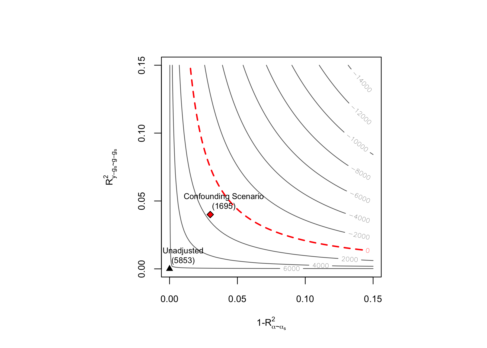

dml.sensemakr implements a general suite of sensitivity analysis tools for Causal Machine Learning as discussed in Chernozhukov, V., Cinelli, C., Newey, W., Sharma A., and Syrgkanis, V. (2026). “Long Story Short: Omitted Variable Bias in Causal Machine Learning.” Review of Economics and Statistics.
Development version
To install the development version on GitHub make sure you have the package devtools installed.
# install.packages("devtools")
devtools::install_github("carloscinelli/dml.sensemakr")Details
For theoretical details please see the paper.
For a primer on Debiased Machine Learning, please check Chernozukohv et al (2018).
Some presentations that may be useful:
Basic Usage
# loads package
library(dml.sensemakr)
#> See details in:
#> - Chernozhukov, V. Cinelli, C. Newey, W. Sharma, A. Syrgkanis, V. (2026). Long Story Short: Omitted Variable Bias in Causal Machine Learning. Review of Economics and Statistics.
#> - Available at: https://doi.org/10.1162/REST.a.1705
## loads data
data("pension")
# set treatment, outcome and covariates
y <- pension$net_tfa # net total financial assets
d <- pension$e401 # 401K eligibility
x <- model.matrix(~ -1 + age + inc + educ+ fsize + marr + twoearn + pira + hown, data = pension)
# run DML (nonparametric model)
dml.401k <- dml(y, d, x, model = "npm")
#> Debiased Machine Learning
#>
#> Model: Nonparametric
#> Target: ate
#> Cross-Fitting: 5 folds, 1 reps
#> ML Method: outcome (yreg0:ranger, yreg1:ranger), treatment (ranger)
#> Tuning: dirty
#>
#>
#> ====================================
#> Tuning parameters using all the data
#> ====================================
#>
#> - Tuning Model for D.
#> -- Best Tune:
#> mtry min.node.size splitrule
#> 1 2 5 variance
#>
#> - Tuning Model for Y (non-parametric).
#> -- Best Tune:
#> mtry min.node.size splitrule
#> 1 2 5 variance
#> mtry min.node.size splitrule
#> 1 2 5 variance
#>
#>
#> ======================================
#> Repeating 5-fold cross-fitting 1 times
#> ======================================
#>
#> -- Rep 1 -- Folds: 1 2 3 4 5
# summary of results with median method (default)
summary(dml.401k)
#>
#> Debiased Machine Learning
#>
#> Model: Nonparametric
#> Cross-Fitting: 5 folds, 1 reps
#> ML Method: outcome (yreg0:ranger, yreg1:ranger, R2 = 28.038%), treatment (ranger, R2 = 11.559%)
#> Tuning: dirty
#>
#> Average Treatment Effect:
#>
#> Estimate Std. Error t value P(>|t|)
#> ate.all 8010 1163 6.889 5.63e-12 ***
#> ---
#> Signif. codes: 0 '***' 0.001 '**' 0.01 '*' 0.05 '.' 0.1 ' ' 1
#> Note: DML estimates combined using the median method.
#>
#> Verbal interpretation of DML procedure:
#>
#> -- Average treatment effects were estimated using DML with 5-fold cross-fitting. In order to reduce the variance that stems from sample splitting, we repeated the procedure 1 times. Estimates are combined using the median as the final estimate, incorporating variation across experiments into the standard error as described in Chernozhukov et al. (2018). The outcome regression uses from the R package ; the treatment regression uses Random Forest from the R package ranger.
# sensitivity analysis
sens.401k <- sensemakr(dml.401k, cf.y = 0.04, cf.d = 0.03)
# summary
summary(sens.401k)
#> ==== Original Analysis ====
#>
#> Debiased Machine Learning
#>
#> Model: Nonparametric
#> Cross-Fitting: 5 folds, 1 reps
#> ML Method: outcome (yreg0:ranger, yreg1:ranger, R2 = 28.038%), treatment (ranger, R2 = 11.559%)
#> Tuning: dirty
#>
#> Average Treatment Effect:
#>
#> Estimate Std. Error t value P(>|t|)
#> ate.all 8010 1163 6.889 5.63e-12 ***
#> ---
#> Signif. codes: 0 '***' 0.001 '**' 0.01 '*' 0.05 '.' 0.1 ' ' 1
#> Note: DML estimates combined using the median method.
#>
#> Verbal interpretation of DML procedure:
#>
#> -- Average treatment effects were estimated using DML with 5-fold cross-fitting. In order to reduce the variance that stems from sample splitting, we repeated the procedure 1 times. Estimates are combined using the median as the final estimate, incorporating variation across experiments into the standard error as described in Chernozhukov et al. (2018). The outcome regression uses from the R package ; the treatment regression uses Random Forest from the R package ranger.
#>
#> ==== Sensitivity Analysis ====
#>
#> Null hypothesis: theta = 0
#> Signif. level: alpha = 0.05
#>
#> Robustness Values:
#> RV (%) RVa (%)
#> ate.all 6.1021 4.6027
#>
#> Verbal interpretation of robustness values:
#>
#> -- Robustness Value for the Bound (RV): omitted variables that explain more than RV% of the residual variation of the outcome (cf.y) and generate an additional RV% of variation on the Riesz Representer (cf.d) are sufficiently strong to make the estimated bounds include 0. Conversely, omitted variables that do not explain more than RV% of the residual variation of the outcome nor generate an additional RV% of variation on the Riesz Representer are not sufficiently strong to do so.
#>
#> -- Robustness Value for the Confidence Bound (RVa): omitted variables that explain more than RV% of the residual variation of the outcome (cf.y) and generate an additional RV% of variation on the Riesz Representer (cf.d) are sufficiently strong to make the confidence bounds include 0, at the significance level of alpha = 0.05. Conversely, omitted variables that do not explain more than RV% of the residual variation of the outcome nor generate an additional RV% of variation on the Riesz Representer are not sufficiently strong to do so.
#>
#> The interpretation of sensitivity parameters can be further refined for each target quantity. See more below.
#>
#> Confidence Bounds for Sensitivity Scenario:
#> lwr upr
#> ate.all 1572.415 14503.094
#>
#> Confidence level: point = 95%; region = 90%.
#> Sensitivity parameters: cf.y = 0.04; cf.d = 0.03; rho2 = 1.
#>
#> Verbal interpretation of confidence bounds:
#>
#> -- The table shows the lower (lwr) and upper (upr) limits of the confidence bounds on the target quantity, considering omitted variables with postulated sensitivity parameters cf.y, cf.d and rho2. The confidence level "point" is the relevant coverage for most use cases, and stands for the coverage rate for the true target quantity. The confidence level "region" stands for the coverage rate of the true bounds.
#>
#> Interpretation of sensitivity parameters:
#>
#> -- cf.y: percentage of the residual variation of the outcome explained by latent variables.
#> -- cf.d: percentage gains in the variation of the Riesz Representer generated by latent variables:
#> ATE: cf.d measures the percentage gains in the average precision on the treatment regression.
# contout plots
plot(sens.401k)